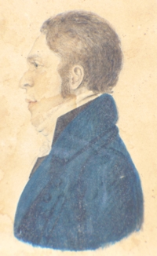

Gerrit Bogert
Gerrit Bogert was born in March 1770. He was the last child born to the marriage of Albany natives and residents Hendrick and Barbara Marselis Bogert.
 He grew up in a sloop captain's home in the first ward in a family with several ambitious, older brothers. His father also was the first Albany city surveyor - a skill he passed along to at least two of his sons.
In January 1795, Gerrit married Margaret Pels Nixon at the Albany Dutch church. By 1810, four children had been christened in Albany. In 1815, he joined the Second Reformed church.
This fourth son of an established family was trained in the law and admitted to practice in May 1793 as certified by Robert Yates, chief justice of New York State.
In August 1797, a great fire destroyed the Montgomery Street "dwellinghouse" of Peter Dox. At that time, "Mr. G. Bogart" lived there with the owner.
After that, these Bogerts were Albany mainstays who resided at 12 Hudson Street - a location close to the Albany city hall. In 1800, their four-member household was served by four slaves.
During the 1800s, city directories identified him as a member of the city council, justice, magistrate, and on the boards of serveral Albany organizations. He also held the position of city surveyor from about 1813 at least thru 1818.
During the early 1800s, he purchased several 40-50 acre lots in Schaghticoke from the city of Albany.
Gerrit Bogert died in 1820. He was but fifty years old. His widow was listed in the directory at 12 Hudson that same year. In 1867, his remains were re-interred at the Albany Rural Cemetery.
Copy of a portrait of unknown origins now in a private collection.